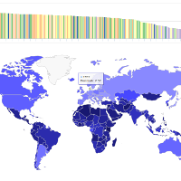

Johan Junkka
A PhD Candidate in History at Umeå University who studies the relationship between fertility and social networks such as voluntary associations in Sweden between 1860-1950. The relationship is studied by linking historical demographic records with membership data from unions, termperance organisations and free churches.
Main research interests are in historical demography, gender studies, statistics, data management, record linking and data visualisation.
Publications
Junkka, Johan and Edvinsson, Sören. (2015) "Gender and fertility within the free churches in the Sundsvall region, Sweden, 1860-1921". The History of the Family. doi:10.1080/1081602X.2015.1043929
Authors copy papers/junkka_2015.pdf and reproducable analysis github.com/junkka/freechurchfertility
Projects
 histmaps - A R data package of Swedish historical administrative boundaries for parishes and counties 1634-1990.
histmaps - A R data package of Swedish historical administrative boundaries for parishes and counties 1634-1990.
 swe-parish - Compilation of information on Swedish historical parishes.
swe-parish - Compilation of information on Swedish historical parishes.
 Bygdeå - a small village in Västerbotten.
Bygdeå - a small village in Västerbotten.
 meankielensanakirja.com- a dictionary for the minority language Meänkieli.
meankielensanakirja.com- a dictionary for the minority language Meänkieli.
 hisco - A R package for classification of HISCO codes to Historical social class systems.
hisco - A R package for classification of HISCO codes to Historical social class systems.
 ehahelper - Event history analysis helper package for R.
ehahelper - Event history analysis helper package for R.
 swe-mfrt - Visualization of marital fertility rates by county in Sweden.
swe-mfrt - Visualization of marital fertility rates by county in Sweden.
 World Fertility - Visualization of country level TFRT from 1960 to 2012.
Find Johan at
Umeå University
Facebook
GitHub
Until next time ♥